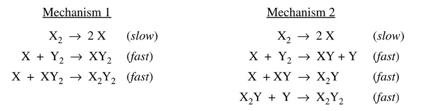

$$ \ce{X_2 + Y_2 -> X_2Y_2}$$
$$ \text{rate}=k[\ce{X_2}]$$
A reaction and its experimentally determined rate law are represented above. A chemist proposes two difference possible mechanisms for the reaction, which are given below.

Based on the information above, which of the following is true?